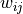
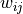
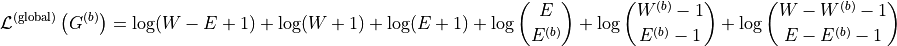
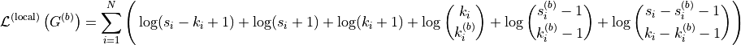

MDL Network Backbones
Tutorial
Code to perform network backboning method derived in “Fast nonparametric inference of network backbones for graph sparsification” (Kirkley, 2024, https://arxiv.org/abs/2409.06417).
The function allows for both directed and undirected networks and provides options to adjust the analysis according to the network’s characteristics.
elist: A list consisting of directed tuples
 representing edges from node
representing edges from node  to node
to node  with weight .
with weight .directed: Specify whether the input edge list is directed or undirected.
out_edges: Determine whether to track out-edges or in-edges attached to each node in the local pruning method.
allow_empty: Decide whether to allow empty backbones when the minimum description length is achieved with no edges.
Outputs include the global and local network backbones along with their inverse compression ratios:
backbone_global: Edge list of the global MDL-optimal backbone.
backbone_local: Edge list of the local MDL-optimal backbone.
compression_global: Inverse compression ratio for the global backbone.
compression_local: Inverse compression ratio for the local backbone.
The method minimizes the following MDL objectives according to Eq. 1 and Eq. 5 in https://arxiv.org/abs/2409.06417:
Global Description Length Objective at Network Backbone:

Local Description Length Objective at Network Backbone:

MDL Backboning
This module provides functions to calculate the MDL-optimal network backbones for both global and local perspectives.
Function |
Description |
|---|---|
Compute the logarithm of the binomial coefficient. |
|
Compute the logarithm of the multiset coefficient. |
|
Compute the global description length objective. |
|
Compute the local description length objective at node-level. |
|
MDL_backboning(elist, directed=True, out_edges=True, allow_empty=True) |
Compute the MDL-optimal global and local network backbones. |
Reference
Description: Compute the logarithm of the binomial coefficient.
Parameters:
- n: Total number of items.
- k: Number of chosen items.
- Returns:
float: Logarithm of the binomial coefficient.
Description: Compute the logarithm of the multiset coefficient.
Parameters:
- n: Number of types.
- k: Number of items.
- Returns:
float: Logarithm of the multiset coefficient.
Description: Compute the global description length objective.
Parameters:
- W: Total weight of the network.
- E: Total number of edges in the network.
- Wb: Total weight of the backbone.
- Eb: Total number of edges in the backbone.
- Returns:
float: Global description length objective value.
Description: Compute the local description length objective at node-level.
Parameters:
- si: Total strength (sum of weights) of node i.
- ki: Degree (number of edges) of node i.
- sbi: Backbone strength of node i.
- kbi: Backbone degree of node i.
- Returns:
float: Local description length objective value for node i.
Description: Compute the MDL-optimal global and local network backbones from the given edge list.
Parameters:
- elist: List of edges as tuples (i, j, w_ij).
- directed: Boolean indicating if the network is directed, defaults as `True`.
- out_edges: Boolean indicating whether to track out-edges (`True`) or in-edges (`False`), defaults as `True`.
- allow_empty: Allows empty backbones if `True`, defaults as `True`.
- Returns:
backbone_global: Edge list of the global MDL-optimal backbone.
backbone_local: Edge list of the local MDL-optimal backbone.
compression_global: Inverse compression ratio for the global backbone.
compression_local: Inverse compression ratio for the local backbone.
Demo
Example Code
Step 1: Import necessary libraries
import numpy as np
import networkx as nx
import matplotlib.pyplot as plt
from paninipy.mdl_backboning import MDL_backboning
Step 2: Define the weighted edge list
# Weighted edge list for the example
elist = [(0,1,12),(0,3,20),(0,4,8),(1,2,1),(1,4,3),(2,0,1),(2,1,3),(3,2,3),(3,4,1),(4,3,1)]
Step 3: Compute backbones and compression ratios
# Compute backbones using out-edges
backbone_global, backbone_local, compression_global, compression_local = MDL_backboning(
elist, directed=True, out_edges=True
)
Step 4: Visualize the original network and backbones
def visualize_backbones(elist, backbone_global, backbone_local, compression_global, compression_local):
G_original = nx.DiGraph()
G_global = nx.DiGraph()
G_local = nx.DiGraph()
for i, j, w in elist:
G_original.add_edge(i, j, weight=w)
for i, j, w in backbone_global:
G_global.add_edge(i, j, weight=w)
for i, j, w in backbone_local:
G_local.add_edge(i, j, weight=w)
pos = nx.spring_layout(G_original, seed=42)
W_original = sum([d['weight'] for u, v, d in G_original.edges(data=True)])
E_original = G_original.number_of_edges()
W_global = sum([d['weight'] for u, v, d in G_global.edges(data=True)])
E_global = G_global.number_of_edges()
W_local = sum([d['weight'] for u, v, d in G_local.edges(data=True)])
E_local = G_local.number_of_edges()
plt.figure(figsize=(18, 6))
plt.subplot(1, 3, 1)
nx.draw_networkx_nodes(G_original, pos, node_color='lightblue', node_size=500)
nx.draw_networkx_edges(G_original, pos, arrowstyle='->', arrowsize=15)
nx.draw_networkx_labels(G_original, pos)
plt.title('Original Network')
plt.axis('off')
plt.text(0.5, -0.1, f'Total weight of the network = {W_original}\nTotal number of edges = {E_original}', ha='center', transform=plt.gca().transAxes)
plt.subplot(1, 3, 2)
nx.draw_networkx_nodes(G_global, pos, node_color='red', node_size=500)
nx.draw_networkx_edges(G_global, pos, arrowstyle='->', arrowsize=15)
nx.draw_networkx_labels(G_global, pos)
plt.title('Global Backbone')
plt.axis('off')
plt.text(0.5, -0.1, f'Total weight of the network = {W_global}\nTotal number of edges = {E_global}\nInverse compression ratio = {compression_global:.4f}', ha='center', transform=plt.gca().transAxes)
plt.subplot(1, 3, 3)
nx.draw_networkx_nodes(G_local, pos, node_color='lightgreen', node_size=500)
nx.draw_networkx_edges(G_local, pos, arrowstyle='->', arrowsize=15)
nx.draw_networkx_labels(G_local, pos)
plt.title('Local Backbone')
plt.axis('off')
plt.text(0.5, -0.1, f'Total weight of the network = {W_local}\nTotal number of edges = {E_local}\nInverse compression ratio = {compression_local:.4f}', ha='center', transform=plt.gca().transAxes)
plt.tight_layout()
plt.savefig("mdl_network_backbones.png", bbox_inches='tight', dpi=200)
plt.show()
visualize_backbones(elist, backbone_global, backbone_local, compression_global, compression_local)
Example Output
Visualization of the original network (left), displays all nodes and edges with the total weight and number of edges. Global backbone (center), Shows the most significant edges contributing to the global structure, along with updated statistics and inverse compression ratio. And local backbone (right), highlights important edges from the perspective of individual nodes, with corresponding statistics and inverse compression ratio.
Paper Source
If you use this algorithm in your work, please cite:
A. Kirkley, “Fast nonparametric inference of network backbones for graph sparsification.” arXiv preprint arXiv:2409.06417 (2024). Paper: https://arxiv.org/abs/2409.06417